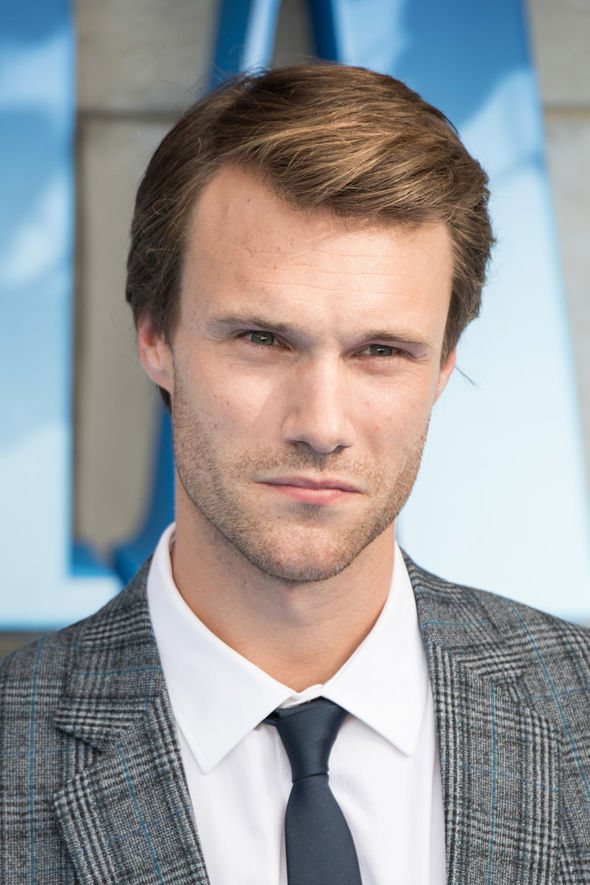

Mary Louise Streep, mais conhecida como Meryl Streep, é uma famosa atriz norte-americana. Descrita pela mídia como a "melhor atriz de todos os tempos", é ganhadora de todos os maiores prêmios do cinema.
Amanda Michelle Seyfried é uma atriz, cantora e modelo norte-americana. Seyfried começou a atuar aos 15 anos, logo após dar início na carreira de modelo. A atriz é estrela de diversos filmes de sucesso, incluindo a comédia Mean Girls, a adaptação do romance Dear John e os musicais Mamma Mia! e Les Misérables.
Pierce Brendan Brosnan OBE é um ator e produtor irlandês, famoso por interpretar no cinema o papel de James Bond em quatro filmes da série do agente 007 criado por Ian Fleming.
Colin Andrew Firth é um ator britânico. Colin ganhou fama na série de televisão Pride and Prejudice, no papel de Mr. Darcy, em 1995.
Christine Baranski é uma atriz americana, vencedora dos prêmios Emmy, SAG, Tony e Drama Desk. Mais conhecida por interpretar Diane Lockhart na série americana The Good Wife.
Stellan John Skarsgård é um ator sueco conhecido pelos seus papéis em filmes como Good Will Hunting, Pirates of the Caribbean: Dead Man's Chest, Mamma Mia!, The Girl With the Dragon Tattoo e vários filmes do Universo Marvel como Dr. Erik Selvig.
Dama Julie Mary Walters, é uma atriz britânica. Ao longo de sua carreira ela recebeu diversos prêmios, incluindo seis BAFTAs, dois Emmys Internacionais e um Globo de Ouro, além de duas indicações ao Oscar.
Dominic Edward Cooper é um ator britânico de televisão, cinema, teatro e rádio. Seus maiores sucessos foram o filme Mamma Mia!, uma adaptação do famoso musical da Broadway e seu papel como Howard Stark no filme Captain America: The First Avenger e na série Marvel's Agent Carter.
Cher é uma cantora, atriz, e personalidade de televisão estadunidense. Ela é conhecida por sua voz grave de contralto e por ter trabalhado em várias áreas do entretenimento, bem como por reinventar continuamente sua música e imagem ao longo de uma carreira que já dura seis décadas.
Lily Chloe Ninette Thomson (Surrey, 5 de abril de 1989), conhecida pelo seu nome artístico como Lily James, é uma atriz britânica. Estreou-se profissionalmente como atriz na peça Vernon God Little, apresentada no Young Vic Theatre e onde interpretou o papel de Taylor.
Rachel McDowall nasceu o 4 de outubro de 1984 em Merseyside, Inglaterra. É atriz, conhecida pelo seu trabalho em Mamma Mia! O Filme (2008), 007 - Quantum of Solace (2008) e The Stranger (2014). É casada com Constantine Tzortzis desde o 16 de maio de 2014.
Ashley-Anne Lilley é uma atriz e cantora escocesa. Ela fez sua estréia no filme de 2008 Mamma Mia!.

Hugh Skinner (Inglaterra, 6 de janeiro de 1985) é um ator inglês.
Josh Dylan é um ator britânico. Ele é mais conhecido por seu papel como Capitão Adam Hunter em Allied, bem como Young Bill em Mamma Mia! Aqui vamos nós outra vez.
Jeremy William Fredric Smith é um ator britânico, mais conhecido por interpretar Albert no filme de guerra War Horse e por interpretar o Jovem Sam em Mamma Mia! Here We Go Again.